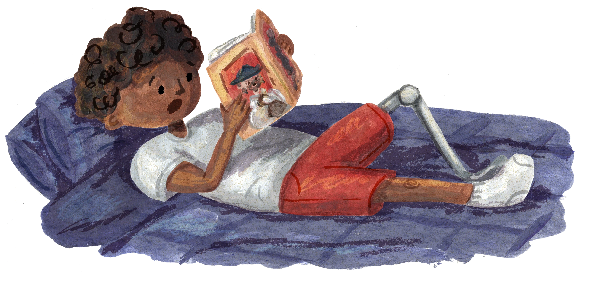
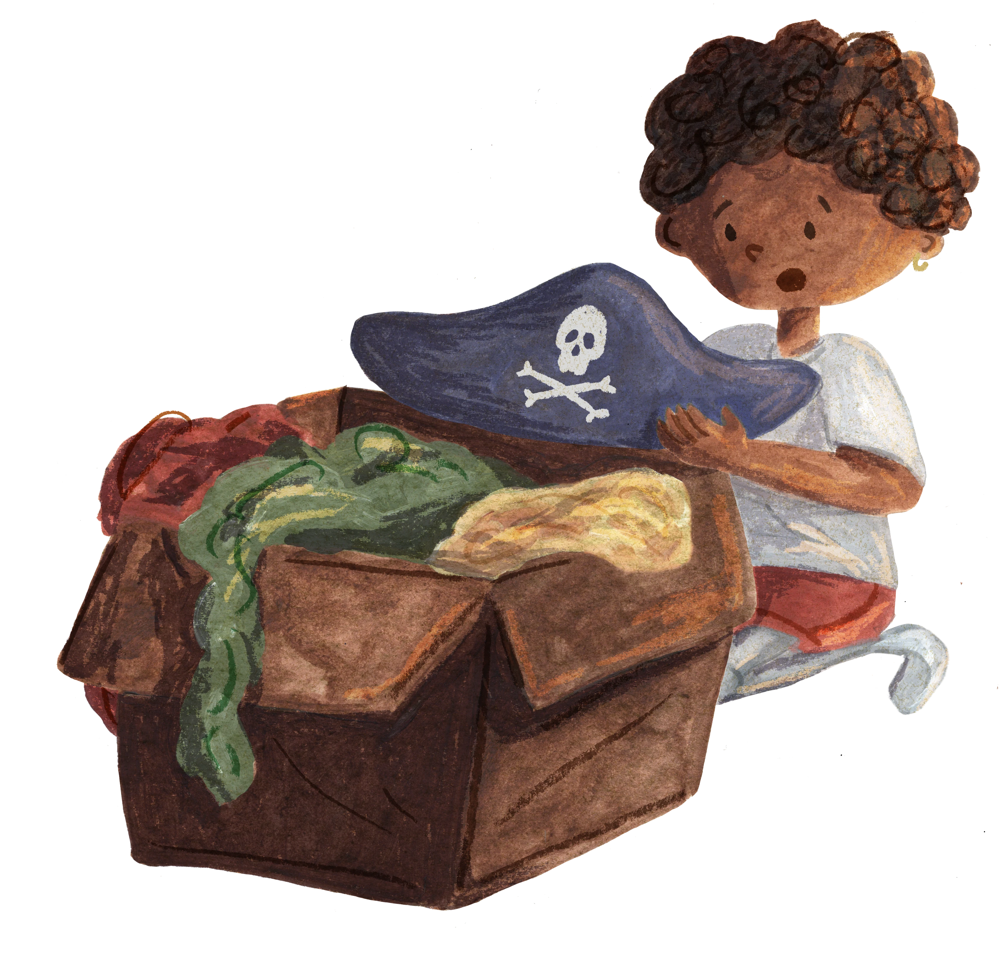
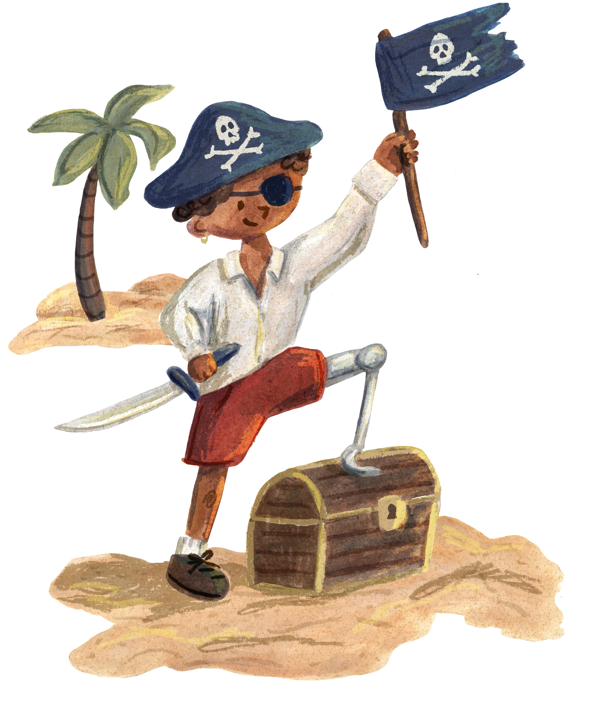
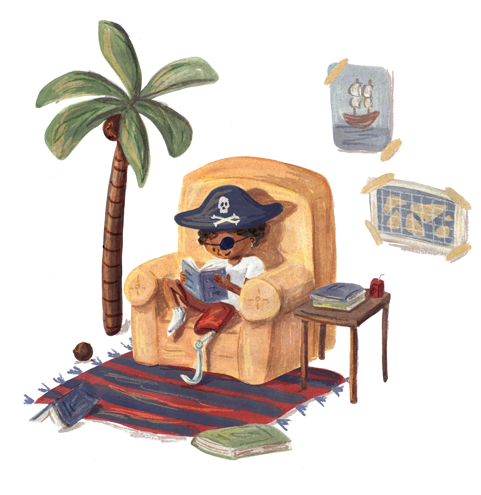

There’s something I really admire about the typography in children’s books. Recently I’ve been particularly fascinated with books from the mid-century, like those illustrated by Art Seiden.
You see, the demands placed on the type in children’s books is much greater than those placed on the typography of more serious, adult books. Books for adults might have pictures, diagrams, or illustrations, but they are always quite segregated from the text.
But in children’s books, typography and illustration mingle. Text spills into the empty spaces between characters and buildings. It peppers the page, to be decoded along with the pictures. The text is part of the composition, and the size and shape of the text will change.
Sometimes a character might be feeling small and shy, and perhaps the text is small and shy too.
Or maybe a character is feeling BOLD and LOUD and so the text, likewise, is BOLD and LOUD!
The point is that fonts in children’s books must be robust and expressive.

As children we are given permission to try on different hats.
One day we might dress as a swashbuckling pirate, the next a firefighter or nurse. We are free to copy the people we admire, to explore and play with different identities, and ways of being in the world.
But as adults this kind of exploration is discouraged. We are afraid of being inauthentic, looking foolish, or being seen as unoriginal.
Ironically, it is children, who dress up as witches and cowboys who are most authentically themselves. A unique voice isn’t something we develop in isolation, it’s something cobbled together by stealing ideas and perspectives from the people we love and admire. It is a collage of everything we find beautiful in the world.
These days, I’m finding the typography in mid-century children’s media quite beautiful. I love the way the type looks in vintage books, food packaging, magazine advertisements, and cartoon title-cards. It is frank and earnest. It often aspires towards something rational, but is limited by the mechanical processes that produced it. In many cases these letters are hand-drawn and possess an inevitable warmth and humanity. I find these letters nostalgic.

I have taken inspiration from the roving bands of misfits depicted in children’s media. I have pillaged and plundered all my favorite typographic ideas from the ’50s and ’60s to make my latest typeface, Marauder*. It is a tapestry of different design elements from the past that I love, and maybe it all adds up to something authentic and original.
It was important to me that Marauder* would be able to stand up to the kinds of demands placed on the books it’s inspired by, and so I kept designing more weights and styles until I felt it could be properly accommodating. Marauder* currently has six weights, three optical sizes, and matching italics, bringing the total number of individual font styles to 36.
Marauder* includes a robust set of accented letters and can support over 250 languages, and of course, because it’s an indestructible type* release, there is a variable font version.
how it looks printed:
¡Qué guay!how it looks up close:
¡Qué guay!Adjust this slider to observe how Marauder* changes depending on its size. Notice how its gestures get relatively larger at smaller sizes to maintain legibility!
Adjust this slider to observe how Marauder* changes depending on how bold it is!
Try editing the text above to observe how chic the italics are
I hope this feeling of fearlessness that led me to make Marauder* is infectious. I hope you will feel inspired to fall in love with the world and create homages to the things you love, and maybe this font will be a piece of that puzzle.
Marauder* is free and open source, because anything less would be a betrayal of the principles that built it. I can’t wait to see what you’ll make.
One important lesson children’s books teach us is that accomplishing great things cannot be done alone. In making this font, it was important to me to bring this idea of a children’s book to life, but I have neither the skill not the patience to do this myself.
I am lucky and grateful to have found a collaborator in the brilliant illustrator Carolyn Bloch. She not only provided the drawings found on this page, but was instrumental in helping to develop my spark of an idea into a fully formed vision.
